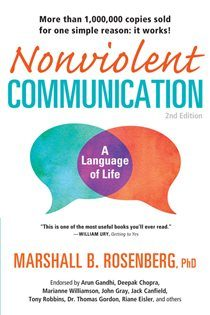

Library › Psychology & People
Nonviolent Communication — Summary & Key Lessons

A language of life — the four-step method that turns conflicts into connections, at home, at work, everywhere.
📖 OPEN THE FULL INTERACTIVE BREAKDOWN →🌐 Read it in Hindi, Hinglish, Gujarati, Tamil & 22 more languages — free, with audio.
💡 The Big Idea
Rosenberg — a psychologist who mediated everywhere from riot-torn schools to war zones — diagnosed everyday speech as quietly violent: moralistic judgments ('you're so selfish'), comparisons, denial of responsibility ('you make me angry'), and demands all trigger defense instead of connection. His alternative grammar, NVC, has four steps: OBSERVATION (state what a camera would record, without evaluation — 'you've arrived after 9 three times this week,' not 'you're always late'; mixing observation with judgment guarantees the listener hears attack), FEELING (name the actual emotion — not faux-feelings like 'I feel ignored,' which are verdicts in disguise), NEED (the universal human need beneath the feeling — respect, safety, contribution, rest; feelings are need-gauges, and EVERY criticism from anyone is a tragic expression of an unmet need), REQUEST (a specific, doable, positive-action ask — 'would you be willing to text if you'll be late?' — that gracefully accepts 'no,' because a request that can't hear no was a demand wearing manners). The same grammar runs inward (self-empathy instead of self-attack) and outward (empathic listening: receive even insults by hearing the feeling and need behind them — 'are you frustrated because you need reliability?'). Connection first; solutions become easy afterward.
🧠 The 6 Key Lessons
Lesson 1: Separate Observation From Evaluation
Chapters 1-3
The first act of verbal violence is fusing what happened with what we think it means: 'you're careless' (verdict) vs 'the report had three errors' (camera). Evaluations trigger the listener's defense system — they must now fight the LABEL instead of addressing the event; observations leave a shared fact both parties can stand on. The discipline is harder than it sounds: our language defaults to 'always/never' (statistically false, emotionally inflammatory), character adjectives ('lazy,' 'inconsiderate'), and diagnosis-as-fact. Rosenberg's practice: before any hard conversation, write the pure observation — timestamped, countable, filmable. If a camera couldn't record it, it's not an observation yet, and the conversation isn't ready.
📖 Example: Rosenberg's school mediations: a principal describes a student as 'defiant and disrespectful' — Rosenberg asks what the boy DID: 'he rolled his eyes when I spoke.' The reframe changes the conversation's physics: 'defiant' invites a character war; 'rolled his… Read the full example →
⚡ Do this: Take your most charged current complaint about someone and rewrite it twice: column A, everything evaluative you've been saying/thinking; column B, only what a camera recorded. Open the actual conversation with column B verbatim.
Lesson 2: Feelings Are Gauges; Needs Are the Engine
Chapters 4-5
Step two and three form the core swap: from blame to self-knowledge. FEELINGS: most of us are emotionally illiterate by training — we say 'I feel that you...' (a thought), 'I feel ignored/betrayed/used' (verdicts about others' actions). Real feelings live in the body: hurt, scared, lonely, delighted, weary. NEEDS: every feeling signals a need met or unmet — the entire human repertoire (security, autonomy, appreciation, meaning, rest, connection) is universal, which is why needs-language connects where strategy-language divides: people can hear 'I need reliability' who cannot hear 'you're unreliable.' Rosenberg's radical ownership: others' actions are the STIMULUS of our feelings, never the CAUSE — the cause is our need. 'You make me angry' outsources your engine to someone else's behavior; 'I'm angry because I'm needing respect' returns the keys. This isn't wordplay: the speaker who owns the need can negotiate; the blamer can only escalate.
📖 Example: His famous marriage mediation: a wife's opening — 'my husband is a wall; talking to him is pointless' (diagnosis; husband stares at floor, being a wall). Rosenberg translates: 'Are you feeling lonely, because you're needing more connection in the evenings?'… Read the full example →
⚡ Do this: Build your vocabulary: for three days, journal twice daily two sentences — 'I feel [real emotion word], because I need [universal need].' Ban 'that,' 'like,' 'you' after 'I feel.' Then use the formula once, live, in a low-stakes moment.
Lesson 3: Requests, Not Demands — and Empathy as First Aid
Chapters 6-8
The REQUEST completes the grammar: specific ('would you be willing to run the numbers by Friday noon?'), positive-action (ask for what you want, not what to stop — brains can't do a 'don't'), and genuinely open to refusal — the test: how you react to 'no' reveals retroactively whether it was a request or a demand (punishment/guilt after a no = it was a demand, and the relationship logs it). On the receiving side, EMPATHY is NVC's second half: when attacked, four ears are available — blame them, blame yourself, sense YOUR feelings/needs, sense THEIRS. The practice is choosing the fourth: 'You never think about anyone but yourself!' can be received as 'are you exhausted and needing support?' — not agreeing, just hearing; connection before correction. Rosenberg's rule for hot moments: empathy FIRST, always — nobody can hear your honesty until they feel heard ('when the other person is in pain, first aid before paperwork'). Anger gets special handling: it's a need buried under a 'should'-thought about others; use it as an alarm, dig for the need, express THAT.
📖 Example: The most famous story in the book: Rosenberg addressing Palestinian refugees in a Bethlehem camp; a man leaps up shouting 'Murderer! Assassin!' (American tear-gas canisters littered the camp). Rosenberg responds with empathic questions only — 'Are you… Read the full example →
⚡ Do this: Convert your top pending 'demand' into a true request: specific action + deadline + spoken escape hatch ('and it's genuinely okay to say no — then we'll figure out something else'). Separately, next time you're attacked, respond ONLY with a feelings/needs guess ('are you [feeling] because you need [need]?') — nothing else — and watch the temperature.
Lesson 4: Self-Compassion in NVC: Mourning, Not Moralizing
Chapter 9: Connecting Compassionately With Ourselves
The harshest violence most people commit daily is internal: the self-talk after mistakes ('idiot,' 'you always ruin things') is moralistic judgment aimed inward — and it produces exactly what judgment always produces: defensiveness, shame-paralysis, and repetition of the behavior. Rosenberg's alternative is NVC MOURNING: when you act against your own values, translate the self-attack into the same four steps — observe what you did (camera-clean), feel the genuine emotion underneath the shame (usually sadness or fear), connect it to the NEED you failed to meet (integrity, care, contribution), then ask what the part of you that acted was TRYING to meet (every action serves some need — the snapped reply served a need for respect; the procrastination served rest or safety). This dual empathy — for the self that regrets AND the self that acted — replaces the internal courtroom with an internal mediation, and change follows naturally because energy stops being spent on the trial. His related liberation: purge 'HAVE TO' from your vocabulary — Rosenberg's exercise of rewriting every 'I have to' as 'I choose to... because I want...' either reveals the hidden need (making the task lighter) or reveals there's no real need at all (making the task optional). Depression, he says provocatively, is often 'the reward for being good' — the cost of a life run on internalized shoulds instead of chosen needs.
📖 Example: Rosenberg's own confession anchors the chapter: berating himself for a mistake — a lecture-circuit blunder he'd normally have prosecuted internally for weeks — he ran the mourning process live: the sadness under the shame connected to his need to contribute… Read the full example →
⚡ Do this: Next self-attack, run the mourning protocol on paper: (1) what I did (camera only), (2) what I feel beneath the shame, (3) the value/need I didn't meet, (4) the need the action WAS trying to meet — then ask what would honor both needs next time. Separately: list your five heaviest 'have to's and rewrite each as 'I choose to ___ because I want ___.' Keep what survives; renegotiate what doesn't.
Lesson 5: The Four Components: Observation, Feeling, Need, Request
Part 1: The Method
Rosenberg's complete NVC formula for clear, compassionate communication: (1) state the observation without judgment ('you arrived 20 minutes late' not 'you're always late'), (2) name your feeling ('I feel frustrated' not 'you make me frustrated'), (3) identify the underlying need ('because I need reliability'), and (4) make a concrete request ('would you call me if you're running late?'). Each component removes a layer of violence from the exchange: observations prevent blame, feelings prevent accusations, needs prevent shame, requests prevent demands. The formula works because it gives the other person nothing to defend against — and people who have nothing to defend against can actually listen. NVC is not softness; it is precision.
📖 Example: Rosenberg demonstrates with a typical conflict: 'You never listen to me' (a judgment that provokes defense) becomes 'When I share my day and see you checking your phone, I feel hurt because I need connection. Would you be willing to put the phone away for 10… Read the full example →
⚡ Do this: The next time you're about to say 'you always/never...', rewrite it in the four components: observation + feeling + need + request. Say it that way and notice the response.
Lesson 6: The Need Behind the Anger: Every Emotion Is a Need's Messenger
Part 2: The Practice
Rosenberg's most transformative insight: behind every strong emotion — especially anger — is an unmet need, and the emotion is simply the messenger. When someone is furious, NVC translates: they need respect, safety, understanding, autonomy — and until you hear the need, the anger has nowhere to go. The practice: when angry (yours or theirs), pause and ask 'what need is not being met?' The answer converts the conflict from a battle of wills into a problem of needs — and needs can be negotiated. This applies to self-anger too: your own rage is information about your unmet needs, not proof of your failure. The person who reads emotions as needs becomes fluent in the language beneath every conflict.
📖 Example: Rosenberg describes mediating a conflict where a parent was furious at a child's mess — and the breakthrough came when the anger was translated: the parent needed order and contribution, the child needed freedom and trust. Two needs, not two enemies — and… Read the full example →
⚡ Do this: Next time you feel anger rising, write down: 'What need of mine is not being met right now?' Name it precisely — then address the need instead of the person.
✅ 5-Step Action Plan
- Open hard conversations with camera-facts only — no adjectives, no 'always.'
- Practice the sentence: 'I feel [emotion] because I need [need]' — own the engine.
- Make requests specific, positive, refusable; treat 'no' as information, not war.
- When attacked, guess the feeling and need out loud before any defense.
- Use anger as an alarm clock: find the buried need and speak that instead.
⚠️ When This Doesn't Work
Rosenberg's empathy-first method assumes both sides want connection. Barings Bank's culture was so polite, so conflict-averse, so 'nonviolent' that nobody ever said the violent truth — that a young trader was running unhedged positions — until the bank had lost £827 million. In a culture where 'let's talk about how you feel' replaces 'your numbers are catastrophic,' NVC becomes the weapon of avoidance. Some conversations need to be uncomfortable and direct; kindness that delays the truth is cruelty with a smile.
💀 The Graveyard Proves It
🏦 Barings Bank — One Trader in Singapore Killed a 233-Year-Old Bank. Burn: £827M — sold for £1. Read the full case study →
💬 Best Quotes from Nonviolent Communication
- “Every criticism, judgment, diagnosis and expression of anger is the tragic expression of an unmet need.”
- “Observing without evaluating is the highest form of intelligence.”
- “When we hear the other person's feelings and needs, we recognize our common humanity.”
Interactive version: mark lessons as read, listen in your language, share quote cards.